No resources match that search.
CSOH (this site)
The full source of this website: static HTML, the multi-cloud Terraform behind it, and the CI that deploys it to AWS, GCP and Azure.
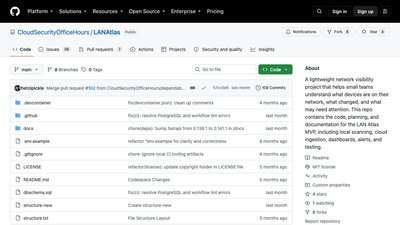
LAN Atlas
A community-built network visibility project: local scanning, cloud ingestion, dashboards and alerts for what is on a small team's network.
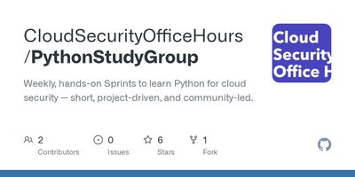
CSOH Python Study Group
Weekly hands-on sprints to learn Python for cloud security: short, project-driven exercises from the CSOH community.

Prowler
Open-source cloud security platform that checks AWS, Azure, GCP, Kubernetes and Microsoft 365 against CIS, NIST, PCI and many other frameworks.
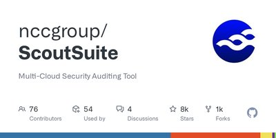
ScoutSuite
NCC Group's multi-cloud auditing tool: reads configuration through provider APIs and renders an offline HTML report of risky settings.
Cloud Custodian
CNCF rules engine that queries, filters and acts on cloud resources for security, cost and governance, with policies written in YAML.
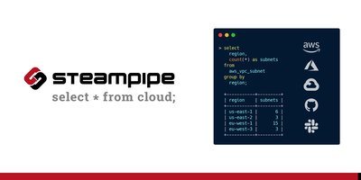
Steampipe
Query cloud APIs, SaaS and code with live SQL and no database to load first, across hundreds of provider plugins.
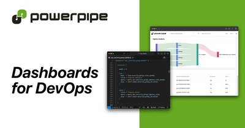
Powerpipe
Dashboards and benchmark runs on top of Steampipe: assess posture against CIS, NIST and other libraries, or build custom views in code.
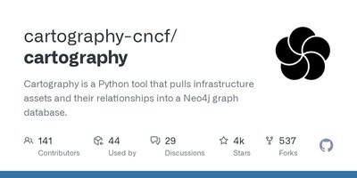
Cartography
CNCF tool that pulls cloud and SaaS assets and their relationships into a Neo4j graph for exposure and attack-path questions.
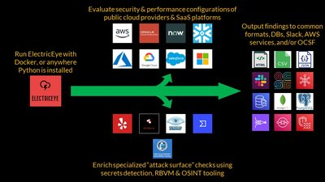
ElectricEye
Multi-cloud, multi-SaaS CLI for asset management and posture management, with checks mapped to more than 20 controls frameworks.
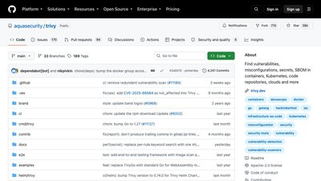
Trivy
Scans containers, Kubernetes, code repositories and cloud accounts for vulnerabilities, misconfigurations and secrets, and generates SBOMs.
Checkov
Static analysis for infrastructure as code (Terraform, CloudFormation, Kubernetes, Helm, ARM, Bicep) with over a thousand built-in policies.
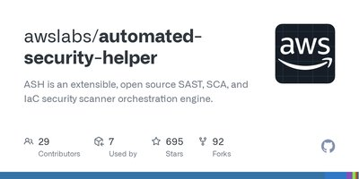
Automated Security Helper (ASH)
AWS orchestration engine that runs a set of SAST, SCA and IaC scanners over a codebase and merges the results.
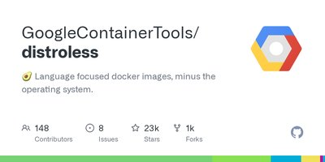
Distroless
Container base images that contain only an application and its runtime dependencies, with no shell or package manager to reduce attack surface.
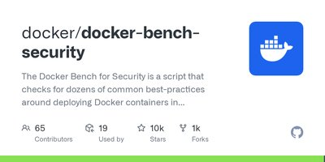
Docker Bench for Security
Script that checks a Docker host and its containers against dozens of best practices from the CIS Docker Benchmark.
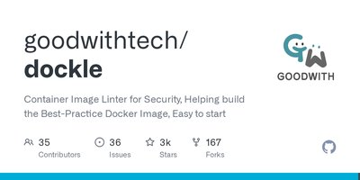
Dockle
Container image linter that checks a built image against CIS benchmarks and image best practices.
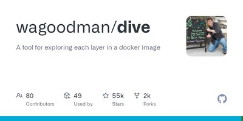
dive
Explore each layer of a container image to see what was added or changed and to find files left behind in intermediate layers.
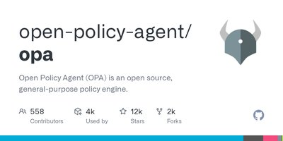
Open Policy Agent (OPA)
General-purpose policy engine and the Rego language, used for Kubernetes admission control, API authorization and IaC checks.
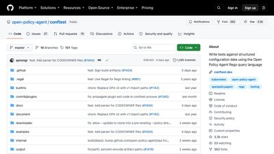
Conftest
Write tests against structured configuration (Terraform plans, Kubernetes manifests, Dockerfiles) using OPA's Rego language.
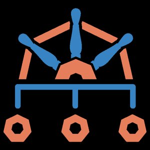
Kyverno
CNCF Kubernetes-native policy engine: validate, mutate and generate resources with policies written as YAML.
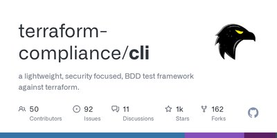
terraform-compliance
Lightweight, security-focused BDD test framework for Terraform: readable Given/When/Then rules checked against a plan.
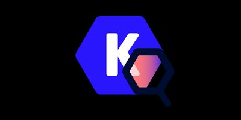
Kubescape
CNCF Kubernetes security platform for the IDE, CI and clusters: risk analysis and misconfiguration scanning against NSA-CISA and CIS.
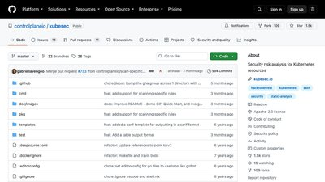
kubesec
Security risk analysis for Kubernetes resources: scores a manifest and explains which settings raise or lower risk.
Popeye
Kubernetes cluster sanitizer from the author of k9s: scans live resources for misconfigurations and dead resources and grades the cluster.
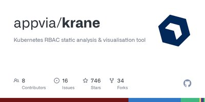
Krane
Kubernetes RBAC static analysis and visualisation tool that flags risky roles and bindings and graphs who can do what.
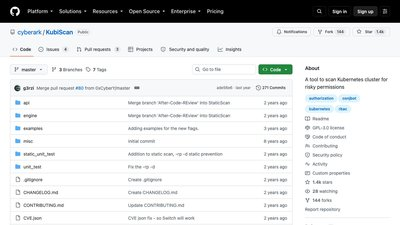
KubiScan
CyberArk Labs tool that scans a Kubernetes cluster for risky RBAC permissions and the accounts that hold them.
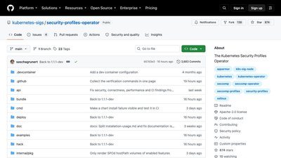
Security Profiles Operator
Kubernetes operator that manages seccomp, SELinux and AppArmor profiles and can record a profile from a running workload.
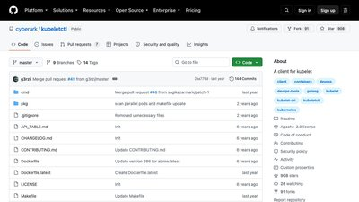
kubeletctl
A client for the Kubernetes kubelet API, used to inspect and test kubelet exposure during a cluster review.
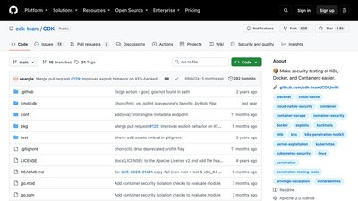
CDK
A toolkit that makes security testing of Kubernetes, Docker and containerd environments easier during authorized assessments.
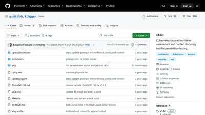
kdigger
Quarkslab's container assessment and context-discovery tool for Kubernetes, aimed at authorized penetration testing.
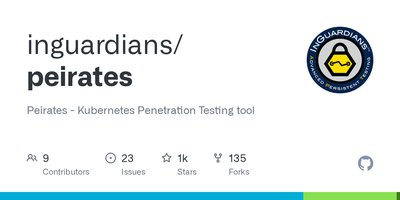
Peirates
A Kubernetes assessment tool for authorized penetration testing of cluster configurations and permissions.
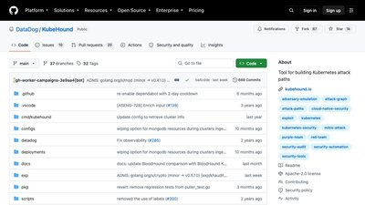
KubeHound
Datadog tool that builds Kubernetes attack-path graphs so defenders can find and close risky permission chains.
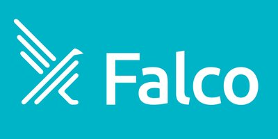
Falco
CNCF cloud-native runtime security engine that watches syscalls and Kubernetes audit events and alerts on suspicious behaviour.
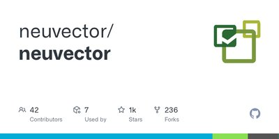
NeuVector
Full-lifecycle container security platform from SUSE, including a layer-7 container firewall, now fully open source.
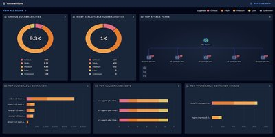
ThreatMapper
Open-source CNAPP that scans hosts, containers, Kubernetes and cloud accounts and ranks findings by attack path.
Cosign
Signing, verification and transparency for containers and binaries, including keyless signing with OIDC identities, part of Sigstore.
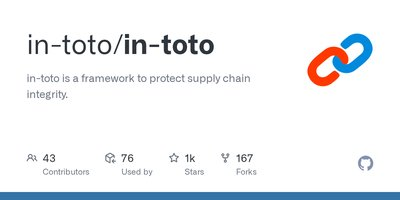
in-toto
CNCF framework that records and verifies each step of a build from source to release to protect supply-chain integrity.
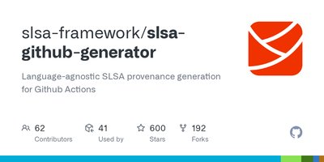
SLSA GitHub Generator
Generates SLSA build provenance for artifacts built in GitHub Actions, for any language.
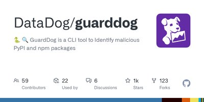
GuardDog
Datadog CLI that identifies malicious PyPI, npm and Go packages using heuristics and Semgrep rules.
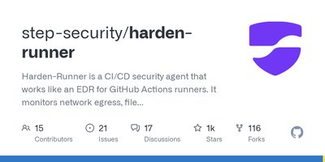
Harden-Runner
Security agent for GitHub Actions runners that monitors network egress, file integrity and processes and can block unexpected egress.
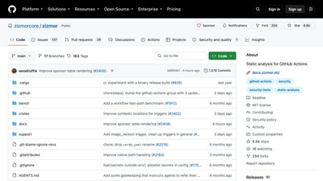
zizmor
Fast static analysis for GitHub Actions workflows: template injection, excessive permissions, unpinned actions and more.
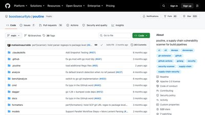
poutine
Supply-chain vulnerability scanner for build pipelines, covering GitHub Actions, GitLab CI and others.
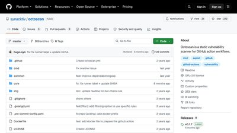
octoscan
Synacktiv's static vulnerability scanner for GitHub Actions workflows, focused on injection and dangerous triggers.
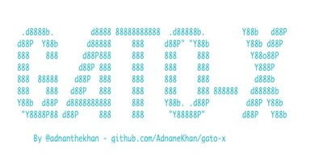
Gato-X
GitHub Actions attack toolkit for authorized testing: static analysis of workflows and self-hosted runner exposure.
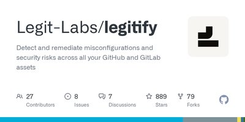
Legitify
Detects and remediates misconfigurations across GitHub and GitLab organizations, repositories and members.
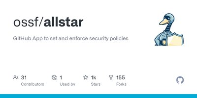
Allstar
OpenSSF GitHub App that continuously enforces security policies such as branch protection across an organization's repositories.
Semgrep
Lightweight static analysis for many languages, with rules that look like the code they match; also widely used for IaC checks.
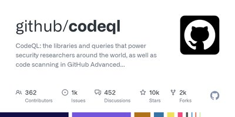
CodeQL
The libraries and queries that power GitHub code scanning; write your own queries to hunt bug variants across a codebase.

TruffleHog
Finds leaked credentials in git history, CI logs and cloud storage and verifies whether each one is still live.

Gitleaks
Fast secret scanner for git repositories, files and stdin, easy to run as a pre-commit hook or CI step.
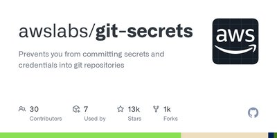
git-secrets
Git hooks from AWS that stop AWS keys and other defined secrets from being committed to a repository.
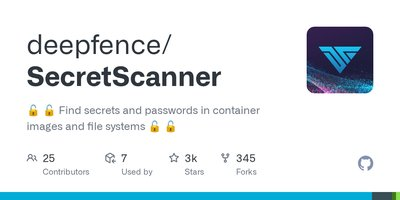
SecretScanner
Finds secrets and passwords in container images and file systems without running the image.
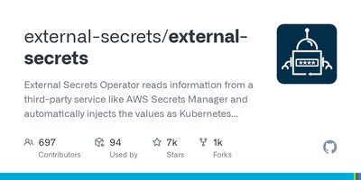
External Secrets Operator
Kubernetes operator that syncs secrets from AWS, Azure, GCP and Vault into Kubernetes Secrets.
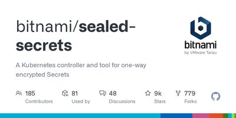
Sealed Secrets
Kubernetes controller and CLI for one-way encrypted Secrets that are safe to store in Git, suited to GitOps.
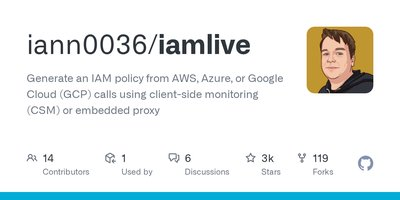
iamlive
Generates an IAM policy from the AWS, Azure or GCP calls a workload actually makes, so you can start from real usage.
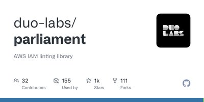
Parliament
AWS IAM linting library that finds malformed policies, wrong resource types and risky permissions.

ScubaGear
CISA automation that assesses a Microsoft 365 tenant against its SCuBA secure-configuration baselines.
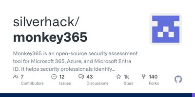
Monkey365
Security assessment for Microsoft 365, Azure and Entra ID that finds misconfigurations and checks them against CIS benchmarks.
Maester
Pester-based test automation framework that alerts when a Microsoft 365 or Entra ID security setting drifts.
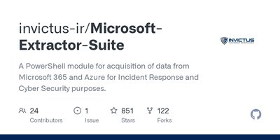
Microsoft-Extractor-Suite
PowerShell module for acquiring Microsoft 365 and Azure data during incident response investigations.
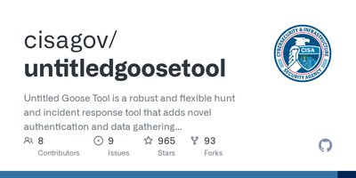
Untitled Goose Tool
CISA hunt and incident-response tool for gathering data from Microsoft 365, Entra ID and Azure environments.
AWS Security Assessment Solution
AWS-published tooling to run a point-in-time assessment of an AWS account using Prowler.
Assisted Log Enabler for AWS
Finds AWS resources that are not logging (VPC flow logs, CloudTrail, Route 53) and turns logging on.
AWS SRA Examples
Example CloudFormation and Terraform implementations of the AWS Security Reference Architecture patterns.
Automated Security Response on AWS
Add-on for AWS Security Hub with a library of playbooks that remediate common findings.
AWS Incident Response Playbooks
Sample incident-response playbooks for common scenarios in AWS environments.
AWS Customer Playbook Framework
Sample templates for building security response playbooks against various AWS scenarios.

Pacu
Rhino Security Labs' AWS exploitation framework for authorized testing of Amazon Web Services environments.

CloudFox
Bishop Fox tool that automates situational awareness for authorized cloud penetration tests in AWS, Azure and GCP.
PurplePanda
Maps privilege-escalation paths within and across clouds and platforms into a Neo4j graph, for red and blue teams.
cloud_enum
Multi-cloud OSINT tool that enumerates public resources in AWS, Azure and Google Cloud from a keyword.
S3Scanner
Scans for misconfigured storage buckets across AWS and other S3-compatible APIs.
Cloudlist
Lists assets from multiple cloud providers in one command, as input for attack-surface work.
GCP IAM Privilege Escalation
Rhino Security Labs' documented GCP IAM privilege-escalation methods, with a script for each, for authorized research.

Stratus Red Team
Datadog tool that emulates granular cloud adversary techniques so teams can validate their detections.
Grimoire
Datadog tool that generates datasets of cloud audit logs for common attack techniques, for detection engineering.
Threatest
Datadog CLI and Go framework for end-to-end testing of threat-detection rules.
Tsunami
Google's general-purpose network security scanner with an extensible plugin system for high-severity, high-confidence findings.

Elastic Detection Rules
Elastic's repository of detection rules and the tooling to develop, test and maintain them.

Sigma
The main repository for Sigma, a vendor-neutral signature format for SIEM detection rules.
Panther Analysis
Panther's built-in detection rules and policies, written in Python.
Microsoft Sentinel
Community detections, hunting queries and playbooks for Microsoft Sentinel, Microsoft's cloud-native SIEM.
CloudGrappler
Permiso tool for querying high-fidelity detections related to known threat activity in AWS and Azure.
Velociraptor
Endpoint visibility and digging tool for remote live forensics and incident response at scale.
GRR Rapid Response
Google's framework for remote live forensics and incident response across a fleet of endpoints.
osquery
SQL-powered operating-system instrumentation, monitoring and analytics for endpoints and servers.
Wazuh
Open-source security platform providing unified XDR and SIEM protection for endpoints and cloud workloads.
ATT&CK Navigator
Web app for navigating and annotating MITRE ATT&CK matrices, useful for coverage and gap analysis.
MITRE CTI
MITRE's cyber threat intelligence repository, expressing ATT&CK and related data in STIX.
Threat Composer
AWS threat-modeling tool that reduces time-to-value when working through threats, mitigations and assumptions.
OWASP Threat Dragon
An open-source threat-modeling tool from OWASP with diagramming and a rule engine.
pytm
A Pythonic framework for threat modeling: define a system in code and generate data-flow diagrams and findings.
Snyk agent-scan
Security scanner for AI agents, MCP servers and agent skills.
Promptfoo
Test and red-team prompts, agents and RAG systems, and compare model behaviour, from the CLI or CI.

CloudGoat
Rhino Security Labs' vulnerable-by-design AWS deployment tool for practising cloud attack and defence.
HackTricks Cloud
Community knowledge base of offensive and defensive techniques for cloud and cloud-native environments.
Hacking the Cloud
An encyclopedia of offensive and defensive security knowledge for cloud-native technologies.
Cloud Pentest Cheatsheets
A collection of cheatsheets for tools used when assessing organizations that run on cloud providers.
AWS Customer Security Incidents
A curated record of publicly reported security incidents involving AWS customers, with lessons drawn from each.
Awesome Cloud Security
A curated list of cloud security resources, tools and reading across providers.
Awesome AWS Security
A curated list of AWS security references, books, videos, tutorials and practice material.
Awesome Kubernetes Security
A curated list of Kubernetes security resources, tools and guidance.